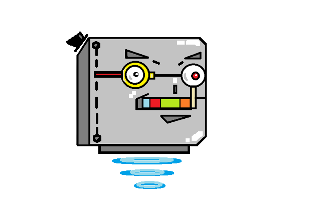
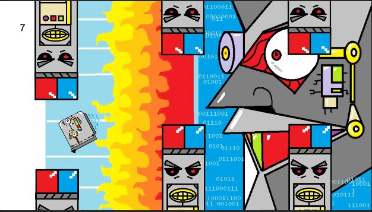
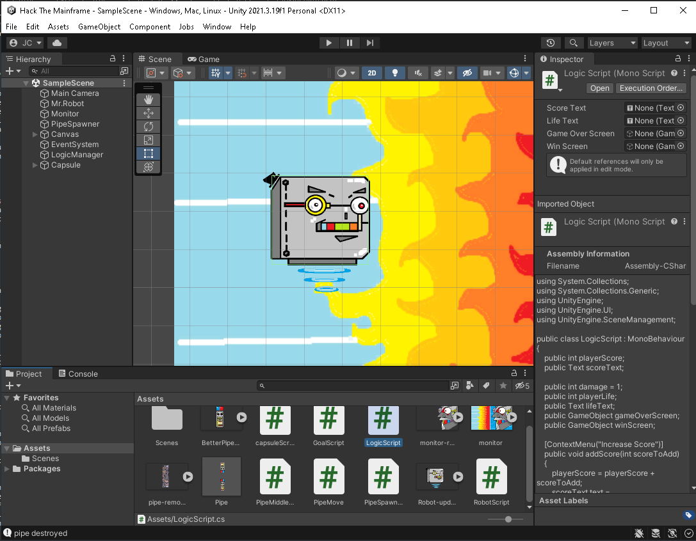

Hack The Main Frame
A game made with unity and C#
By Jonathan Chea
h1>
Unity is a real time game development platform. This means you can easily make games as it simplifies the process. Learning Unity is something I can recommend to anyone
as the process to create games is very open ended. WIth the base Unity to import assets from other places such as Blender or any .png file, as well as the store and what they give you. There are
a lot of tutorials online for any kind of game you want to build that will help you learn and give you a foundation to make your own modifications. Popular games made with the Unity engine are Cuphead(2017), Escape from Tarkov, Subnautica(2014), Pokemon GO, and Hollow Knight just to name a few. Other alternatives that could be used instead of Unity is Unreal Engine (great graphics) and Yahaha (metaverse games).
With Unity's student plan, if you are enrolled into a school you can get a free year subscription by linking your school info to Unity. This allows more options on learning outlets as well as a free $80 package of assets to use which includes game assets as well as templates for precreated games with some small tutorials.
A handy plugin in Unity is that you can link Visual Studio to the environment so when you need to code (write scripts) in C# you have easy access to fast closing statements and automatically suggested codes from Unity to Visual Studio.
With just the base edition (no other assets used yet) and a handy youtube video, "The Unity Tutorial For Complete Beginners":
https://www.youtube.com/watch?v=XtQMytORBmM&t=644s I was able to complete my first two builds in unity. One being a replica of the video (flappy bird) with handmade assets and the other expanding on the ideas in the video and making a unique small project.
So the name of my game is Hack The Main Frame and you may wonder how thats different than Flappy bird.

In flappy bird the objective is to see how many pipes you can go through while avoiding them to make a high score. In my game the objective is to use the same pipes that would kill the bird to rather bump the robot into an end goal on the screen (The mainframe). This didn't take as long as you would think as Unity has built in physics and colliders. During the tutorial you also had to add physics to move the bird and keep it bird in flight as a button press would make the object move to your desired location and static gravity to make it fall. With some editing in the scripts I was able to take away the logic to trigger a game over screen and assign how a game over would actually work. I also added a new condition if the robot got to a certain collider it would trigger a different screen (win screen). There are a lot of options to test out and playing a game that is actually changing after every new addition is easy to debug (you can also add debug code to trigger in your console for added help ex. pipe was destroyed after leaving screen).
Another fun process in Unity is being able to import your own 2D/3D assets. I had a lot of fun designing the robot, the background, and the pipes in Hack The Mainframe, and there is so much more I could add and in the tutorial he even gives you some ideas to help learn and expand on the game. Things like adding a background, sounds effects, background music. One fix that needs to happen is to make the game over screen not appear when the robot has reached the goal and the win screen is up.

Learning about Unity, I am glad that there is a fair amount of coding you have to do in order to make things work the way you want them to. This is because of the amount of customization that is available by working with the code. One could definetly find tutorials on how online for any sort of problem as there is a whole lot of them for many different games or ideas. Unity is a lot about object oriented programming with all the different gameObjects you need to implement. When writing scripts for each gameObject there are two fields which are very imporant. Them being the start and update, start being well on start and update being after every frame, run this code. Making functions is also essential as we had to write logic to make the robot jump and call the function when the space key was pressed inside the update.

There a lot of scripts but I will be talking about the robot.script and the UI logic script (Each file with the green # in the bottom of the image is a script). Inside of the robotScript, update(), the first code we had to write was:
if (Input.GetKeyDown(KeyCode.Space) == true && robotAlive){
Rigidbody.velocity = Vector2.up * jumpStrength;}
There is an if statement that checked if the spacebar was pressed and that the robot was still alive (not game over screen), move that rigidBody's velocity(built in function) up in the y axis and multiply that by the variable jump strength which we just assigned as a float in the class. This was interesting as the Unity UI options/functions can communicate with whatever we wrote in the script. This allowed our robot to jump up with help of the physics we assigned to its gameObject.
Well this is a small snippet of what I had learned following this tutorial and hopefully in my next blog post I can share this game (he showed us how in the tutorial but I don't think its flushed out enough). Anyways, farewell and in the next continuation of this post I will talk about all the changes that were done to make this game how it is and the changes I added along the way.